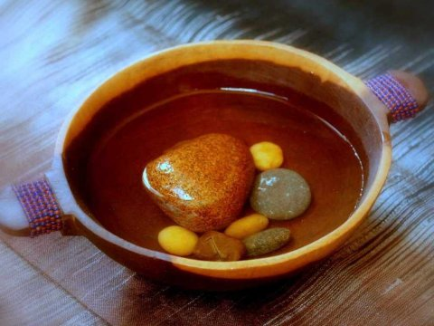

Stone Soup
- Ingredients
- Cooking Instructions
- Nutritional Information
- Comments
Soup made from Stone stock.
Stone soup is a delicious, low carb, gluten free, organic, vegan,
fair-trade, humanely slaughtered, grass-fed, sustainable grown
option that the whole village will love.
Stone Soup on Wikipedia

Ingredients
- 1 Pot
- 1+ Stone(s) to taste
- Water, enough to cover stone(s)
- Anything else
Cooking Instructions
- Add Stone(s) to pot
- Sear on low for 10 minutes
- Add water to the pot
- Continue to heat to a boil
- Simmer for 5 minutes
- Invite neighborhood to add ingredients